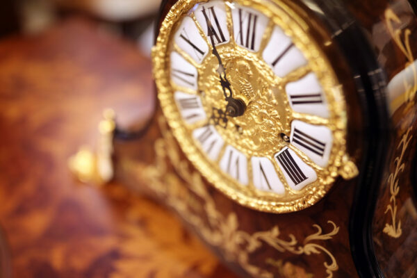
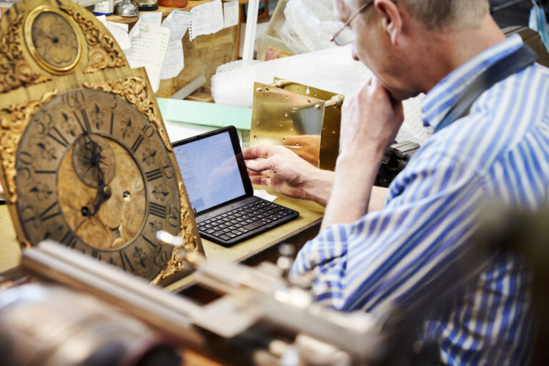

Carriage Clock Value | How To Find Your Clocks Price
There are many different ways to appraise a vintage carriage clock, whether it is antique or modern. From exploring it’s historical significance, to understanding it’s internal mechanism, here’s 3 quick easy ways to value your antique carriage clock.
Step 1
Carriage Clock Value
The Value of Mint Condition
Classic Carriage Clock with Golden Face
It’s important to know how the condition of your clock affects its appraisal. The more damage that a carriage clock has, the less it is worth. If the carriage clock has any missing pieces and/or is non-running, then it’s worth less than if it’s in pristine condition. Begin examining the external features of the clock, looking closely at the following features;
Clocks Face: Does the face have any damages, are the numeric engravings or markings in any way damaged? If the clocks face is showing to be slightly worn, taking this to your local horologist or clock repair may be the best idea. A well trained professional should be able to clean and revive the clock, eliminating some of the dullness in the face.
Clocks Hands: This is crucial for examining, if the hands no longer work, then your clock could loose some serious value, Carriage clocks are known for being rather delicate. Ensure that both clock hands are in working condition before valuation.
Base & Body: Finally, a clock appraisal will look at the overall condition, this can include any markings, denting’s or paint chipping of the clock from the base across the body, whilst it won’t typically effect the value of the clock drastically it can positively effect the value if the clock is considered to be in ‘mint’ condition, you are likely to have a higher offer and higher value carriage clock.
Alongside considering the external features of the clock, a horologist, or antique collector, will also check the internal mechanism of an antique clock to understand it’s worth. Collectors usually place value on clock mechanisms, so the more mechanically impressive a device is, the more valuable it becomes. If any of these mechanics have been extensively repaired or if any of them aren’t original to the antique item collectors will consider this antique worthless.
Step 2
Historical Clocks
Value a clock by its historical significance
Some collectors are more interested in the historical significance of a product. Unfortunately, this often means that these people will only want to purchase products from the past and can tend to ignore modern clocks entirely. This means that these people would be willing to pay a lot for an antique carriage clock, but not much for a modern one. Understanding the historical significance can help when it comes to selling your antique carriage clock, so it’s always important to try and do some homework and research on where your clock originates and what it’s original purpose was.
Unfortunately there are no guidelines to what makes a clock ‘interesting’, what might attract one appraiser, might not appeal to the other, this means a lot of valuation based on historical significance is preference based. For example, if you happen to own an antique carriage clock dating back to WW1, and your appraiser is an avid collector of WW1 Memorabilia, chances are you’ll be offered a higher value for your clock due to the personal preference and connection with the history.
A good guideline of understanding elements of an interesting background includes understanding the record of ownership, or place of origin with an estimated date.
Step 3
Valuation of Clock history
Clock Manufacturers
Valuing a Clock Based Upon It’s Manufacturers & Creators
Checking for the original manufacturer should be one of your first steps when it comes to appraising your carriage clock, you’ll typically be able to find a marking, engraving, initial or company stamp on the base of the clock, or small and centred in the face.
If you are able to identify the clock by it’s manufacturer, you’re more likely to get an exact valuation based on the clocks true worth, unlike valuation via historical significance, a clock manufacturers reputation can have a huge impact on the overall value of the clock.
An antique collector will be able to identify if a clock is an ‘early piece’ of work by a now famous or well known brand, For your antique clock to be worth anything, it must be the real thing, this means it requires it’s original parts from the original manufacturer.